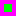
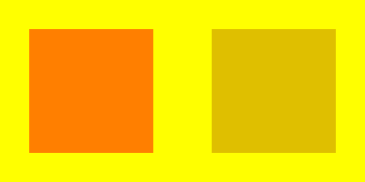
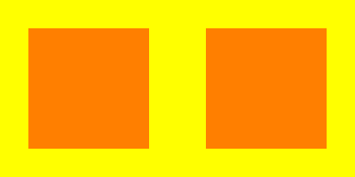

「乗算済みアルファ」とは何か。の前に、まず「乗算済みアルファ」という機能を使うとどんな恩恵が
あるかを申し上げますと
１．通常のバイリニアフィルタリング描画をした際に完全透明部分との境界に完全透明部分のピクセルの色が
うっすら表示されてしまう問題の解消
２．関数 MakeScreen で作成できるアルファチャンネル付きの『描画対象にできるグラフィックハンドル』に
対する半透明描画の結果が直感的になる
の二つがあります。
最初に１の説明をします。
まずこちらのスクリーンショットをご覧ください。
#include "DxLib.h"
int WINAPI WinMain( HINSTANCE hInstance, HINSTANCE hPrevInstance, LPSTR lpCmdLine, int nCmdShow )
{
int handle;
// ウインドウモードで起動
ChangeWindowMode( TRUE ) ;
// 画面のサイズを縦横400ピクセルにする
SetGraphMode( 400, 400, 32 ) ;
// ＤＸライブラリの初期化
if( DxLib_Init() < 0 ) return -1 ;
// 透過色を紫( R:255 G:0 B:255 )にする
SetTransColor( 255, 0, 255 ) ;
// 画像を読み込む
handle = LoadGraph( "PMAImage01.png" ) ;
// 結果が分かりやすいように画面を灰色にする
DrawBox( 0, 0, 400, 400, GetColor( 128,128,128 ), TRUE ) ;
// 描画モードをバイリニアフィルタリングにする
SetDrawMode( DX_DRAWMODE_BILINEAR ) ;
// 画面の中心に読み込んだ画像を拡大して描画する
DrawExtendGraph( 0, 0, 400, 400, handle, TRUE ) ;
// キー入力待ち
WaitKey() ;
// ＤＸライブラリの後始末
DxLib_End() ;
// ソフトの終了
return 0 ;
}
このスクリーンショットは↓この

縦横16ピクセルの画像を使って、紫色の部分を透過色として読み込んだ後バイリニアフィルタリング設定
( SetDrawMode( DX_DRAWMODE_BILINEAR ) ; )の状態で DrawExtendGraph を使用して透過色処理付きで
縦横400ピクセルに拡大して画面に描画したものです。
中心に拡大描画された緑色の四角形の縁の部分に薄く紫色が見えますが、これは透過色の機能によって
描画されないはずの紫色のピクセルの色です。
この現象はＤＸライブラリの通常の描画処理では避けられません。
ただ、今回お勧めする「乗算済みアルファ」を使用するとこの問題が解消されます。
上記スクリーンショットで示したプログラムに「乗算済みアルファ」を使用した結果はこちらです。
#include "DxLib.h"
int WINAPI WinMain( HINSTANCE hInstance, HINSTANCE hPrevInstance, LPSTR lpCmdLine, int nCmdShow )
{
int handle;
// ウインドウモードで起動
ChangeWindowMode( TRUE ) ;
// 画面のサイズを縦横400ピクセルにする
SetGraphMode( 400, 400, 32 ) ;
// ＤＸライブラリの初期化
if( DxLib_Init() < 0 ) return -1 ;
// 透過色を紫( R:255 G:0 B:255 )にする
SetTransColor( 255, 0, 255 ) ;
// 画像を読み込んだ後、乗算済みアルファ画像に変換する設定を有効にする
SetUsePremulAlphaConvertLoad( TRUE ) ;
// 画像を読み込む
handle = LoadGraph( "PMAImage01.png" ) ;
// 結果が分かりやすいように画面を灰色にする
DrawBox( 0, 0, 400, 400, GetColor( 128,128,128 ), TRUE ) ;
// 描画モードをバイリニアフィルタリングにする
SetDrawMode( DX_DRAWMODE_BILINEAR ) ;
// 乗算済みアルファ画像用のαブレンドの設定にする
SetDrawBlendMode( DX_BLENDMODE_PMA_ALPHA, 255 ) ;
// 画面の中心に読み込んだ画像を拡大して描画する
DrawExtendGraph( 0, 0, 400, 400, handle, TRUE ) ;
// キー入力待ち
WaitKey() ;
// ＤＸライブラリの後始末
DxLib_End() ;
// ソフトの終了
return 0 ;
}
縁に見えていた紫色が消えました。
これが恩恵その１です。
次に恩恵その２のご説明をします。
MakeScreen を第３引数を TRUE にして呼び出すとアルファチャンネル付きの『描画対象にできる
( SetDrawScreen の引数として渡せる )グラフィックハンドル』を作成することができます。
( 『アルファチャンネル』は要は『各ピクセルの不透明度情報』です )
このグラフィックハンドルを SetDrawScreen で描画対象にした状態で描画処理を行い、その後に
今度は裏画面を描画対象にした後このグラフィックハンドルを使って描画すれば、
『グラフィックハンドルに対して行った描画処理と全く同じ結果が裏画面に対して描画される』
と期待するものですが、通常の描画ではその期待通りにはなりません。
試しに裏画面に直接『不透明度５０％の赤い矩形』を描画した場合( スクリーンショット左側 )と、
『アルファチャンネル付きの描画対象にできるグラフィックハンドル』に対して『不透明度５０％の
赤い矩形』を描画して、そのグラフィックハンドルを裏画面に描画した場合( スクリーンショットの右側 )
の結果がこちらです。

#include "DxLib.h"
int WINAPI WinMain( HINSTANCE hInstance, HINSTANCE hPrevInstance, LPSTR lpCmdLine, int nCmdShow )
{
int screen ;
// ウインドウモードで起動
ChangeWindowMode( TRUE ) ;
// 画面サイズを400x200にする
SetGraphMode( 400, 200, 32 ) ;
// ＤＸライブラリの初期化
if( DxLib_Init() < 0 ) return -1 ;
// アルファチャンネル付きの描画対象にできるグラフィックハンドルを作成
screen = MakeScreen( 200, 200, TRUE ) ;
// 作成したグラフィックハンドルを描画対象にする
SetDrawScreen( screen ) ;
// アルファブレンドモードを使って、不透明度５０％の赤い箱を描画
SetDrawBlendMode( DX_BLENDMODE_ALPHA, 128 ) ;
DrawBox( 32, 32, 168, 168, GetColor( 255, 0, 0 ), TRUE ) ;
SetDrawBlendMode( DX_BLENDMODE_NOBLEND, 255 ) ;
// 描画先を裏画面に変更
SetDrawScreen( DX_SCREEN_BACK ) ;
// 結果が分かりやすいように画面を黄色にする
DrawBox( 0, 0, 400, 200, GetColor( 255, 255, 0 ), TRUE ) ;
// 裏画面に直接不透明度５０％の赤い箱を描画
SetDrawBlendMode( DX_BLENDMODE_ALPHA, 128 ) ;
DrawBox( 32, 32, 168, 168, GetColor( 255, 0, 0 ), TRUE ) ;
SetDrawBlendMode( DX_BLENDMODE_NOBLEND, 255 ) ;
// 画面右半分に作成したグラフィックハンドルを描画
DrawGraph( 200, 0, screen, TRUE ) ;
// 裏画面の内容を表画面に反映
ScreenFlip() ;
// キー入力待ち
WaitKey() ;
// ＤＸライブラリの後始末
DxLib_End() ;
// ソフトの終了
return 0 ;
}
期待するのは左右共に『不透明度５０％の赤い矩形』が表示されることですが、実際には『描画対象にできる
グラフィックハンドル』を介している方は不透明度が２５％になってしまっています。
ここで「乗算済みアルファ」を使用すると期待通りの結果が得られます。

#include "DxLib.h"
int WINAPI WinMain( HINSTANCE hInstance, HINSTANCE hPrevInstance, LPSTR lpCmdLine, int nCmdShow )
{
int screen ;
// ウインドウモードで起動
ChangeWindowMode( TRUE ) ;
// 画面サイズを400x200にする
SetGraphMode( 400, 200, 32 ) ;
// ＤＸライブラリの初期化
if( DxLib_Init() < 0 ) return -1 ;
// アルファチャンネル付きの描画対象にできるグラフィックハンドルを作成
screen = MakeScreen( 200, 200, TRUE ) ;
// 作成したグラフィックハンドルを描画対象にする
SetDrawScreen( screen ) ;
// 乗算済みアルファ用のアルファブレンドモードを使って、不透明度５０％の赤い箱を描画
SetDrawBlendMode( DX_BLENDMODE_PMA_ALPHA, 128 ) ;
DrawBox( 32, 32, 168, 168, GetColor( 255, 0, 0 ), TRUE ) ;
SetDrawBlendMode( DX_BLENDMODE_NOBLEND, 255 ) ;
// 描画先を裏画面に変更
SetDrawScreen( DX_SCREEN_BACK ) ;
// 結果が分かりやすいように画面を黄色にする
DrawBox( 0, 0, 400, 200, GetColor( 255, 255, 0 ), TRUE ) ;
// 裏画面に直接不透明度５０％の赤い箱を描画
SetDrawBlendMode( DX_BLENDMODE_ALPHA, 128 ) ;
DrawBox( 32, 32, 168, 168, GetColor( 255, 0, 0 ), TRUE ) ;
SetDrawBlendMode( DX_BLENDMODE_NOBLEND, 255 ) ;
// 乗算済みアルファ用のアルファブレンドモードを使って
// 画面右半分に作成したグラフィックハンドルを描画
SetDrawBlendMode( DX_BLENDMODE_PMA_ALPHA, 255 ) ;
DrawGraph( 200, 0, screen, TRUE ) ;
SetDrawBlendMode( DX_BLENDMODE_NOBLEND, 255 ) ;
// 裏画面の内容を表画面に反映
ScreenFlip() ;
// キー入力待ち
WaitKey() ;
// ＤＸライブラリの後始末
DxLib_End() ;
// ソフトの終了
return 0 ;
}
これが恩恵その２です。
「乗算済みアルファ」の利用するには必ず以下の「乗算済みアルファ用描画ブレンドモード」を
使用します。
// 乗算済みアルファ用のアルファブレンド
DX_BLENDMODE_PMA_ALPHA
// 乗算済みアルファ用の加算ブレンド
DX_BLENDMODE_PMA_ADD
// 乗算済みアルファ用の減算ブレンド
DX_BLENDMODE_PMA_SUB
そして、上記のブレンドモードを使用して DrawGraph などでグラフィックハンドルの画像を描画する際は、
「乗算済みアルファの画像」のグラフィックハンドルを使用します。
LoadGraph で読み込み作成するグラフィックハンドルの画像を「乗算済みアルファの画像」にするには
LoadGraph で画像ファイルを読み込む前に SetUsePremulAlphaConvertLoad( TRUE ) ; を実行しておきます。
SetUsePremulAlphaConvertLoad は読み込んだ画像ファイルの画像を「乗算済みアルファの画像」に
するかどうかを設定する為の関数で、デフォルトでは FALSE が設定された状態となっています。
因みに「乗算済みアルファの画像」のグラフィックハンドルを「乗算済みアルファ用」ではない通常の
ブレンドモード( DX_BLENDMODE_ALPHA など )で描画すると、描画結果が変になりますので、
「乗算済みアルファの画像」は必ず「乗算済みアルファ用のブレンドモード」で描画する必要があります。
MakeScreen で作成した『アルファチャンネル付きの描画対象にできるグラフィックハンドル』に対して
「乗算済みアルファの画像」を「乗算済みアルファ用のブレンドモード」で描画した場合は、
グラフィックハンドルに書き込まれる画像は「乗算済みアルファの画像」となりますので、
そのグラフィックハンドルを使って裏画面に対して DrawGraph などで描画する場合は
「乗算済みアルファ用のブレンドモード」を使用する必要があります。
後、フォントにも「乗算済みアルファ用のフォント」を作るための関数 SetFontCacheUsePremulAlphaFlag があります。
こちらも SetUsePremulAlphaConvertLoad と同様に CreateFontToHandle を呼ぶ前に TRUE を渡して呼んでおくと、
その後 CreateFontToHandle 作成されたフォントが「乗算済みアルファ用のフォント」となります。
「乗算済みアルファ用のフォント」は要はフォントの画像が「乗算済みアルファの画像」になっただけですので、
このフォントを使用して DrawStringToHandle などで文字列を描画する際は DX_BLENDMODE_PMA_ALPHA 等の
「乗算済みアルファの画像」用のブレンドモードを使用するように設定しておく必要がありますのでご注意ください。
「乗算済みアルファ」を利用する方法は以上です。
今回「恩恵その１」について、分かりやすいようにバイリニアフィルタリング＋拡大描画でご説明しましたが、
DrawGraphF などを使用して小数点以下が０ではない中途半端な座標に描画した場合にも同現象が発生しますので、
等倍でしか描画処理を行わない場合も DrawGraphF で小数点以下の座標を指定して描画する機会がある場合は
恩恵があります。( あとバイリニアフィルタリングを使用する設定で DrawRotaGraph や DrawModiGraph で
回転 or 変形描画する場合も・・・ )
因みに、MakeScreen で作成した『アルファっチャンネル付きの描画対象にできるグラフィックハンドル』( 以降「仮画面」とします )に対して
「乗算済みアルファ」の機能を使って描画処理を行った場合も、その仮画面を裏画面に描画した場合に
「裏画面に描画される結果」が「仮画面に対して行った描画処理と結果が一致」するのは
仮画面に対して一つのブレンドモードで描画を行い、仮画面を裏画面に描画する際も
同様のブレンドモードで描画をした場合のみとなりますのでご注意ください。
というのも、仮画面の各ピクセルは「何のブレンドモードで描画されたピクセルか」は記憶していないので、
例えば裏画面に対して仮画面を「乗算済みアルファ用のアルファブレンド」で描画した場合、
仮画面の全てのピクセルは「乗算済みアルファ用のアルファブレンド」で描画されます。
なので、仮画面に対して「乗算済みアルファ用の加算ブレンド」で描画されたピクセルがあったとしても
そのピクセルも裏画面に描画する際に「乗算済みアルファ用のアルファブレンド」で描画されてしまうので、
仮画面に対して行った「乗算済みアルファ用の加算ブレンド」とは異なった結果が裏画面に描画されてしまう、というわけです。
＜おまけ：何が「乗算済み」なのか＞
何で今回ご紹介の機能が「乗算済みアルファ」なのかというお話です。
まず最初に、通常の画像で通常のアルファブレンド描画をした際の描画色決定の式は以下のようになります。
DR' = SA * SR + ( 1.0f - SA ) * DR
DG' = SA * SG + ( 1.0f - SA ) * DG
DB' = SA * SB + ( 1.0f - SA ) * DB
DA' = SA * SA + ( 1.0f - SA ) * DA
( 0〜255 の値を 0.0f〜1.0f の値で表現しています )
( SR:SG:SB:SA 書き込み元の赤・緑・青・不透明度の値
DR:DG:DB:DA 書き込み先の赤・緑・青・不透明度の値
DR':DG':DB':DA' 描画処理後の書き込み先の赤・緑・青・不透明度の値 )
乗算済みアルファの画像を使った乗算済みアルファ用のアルファブレンド描画の際の式は以下のようになります
DR' = SR + ( 1.0f - SA ) * DR
DG' = SG + ( 1.0f - SA ) * DG
DB' = SB + ( 1.0f - SA ) * DB
DA' = SA + ( 1.0f - SA ) * DA
ご覧の通り SR,SG,SB,SA に対して行っていた SA * が無くなっています。
この内 SR,SG,SB に対してはアルファブレンドの式として SA * 無いと正しい計算にならないのですが
( SA に対しては SA * が無いのが正しいです )、無くなっています。
何故それで問題ないのかと言いますと、「乗算済みアルファの画像」は各ピクセルの R,G,B に対して
既に A が乗算された後の値だからです。
画像のピクセルの色の時点で R,G,B と A の乗算は済んでいる・・・だから「乗算済みアルファ」
というわけです。( 正しくは「Aとの乗算済みのRGB」ですが・・・ )
尚、通常のアルファブレンドで DA' に代入されている値が
DA' = SA * SA + ( 1.0f - SA ) * DA
となっていますが、正しい計算としては
DA' = SA + ( 1.0f - SA ) * DA
となります。
なぜ通常のアルファブレンドでも正しい計算式を使用しないのかと言いますと、ちょっと古い GPU では
R,G,B で使用する計算式と、A で使用する計算式を別のものにすることができないからです。
そして、「乗算済みアルファの画像」を使用すれば、R,G,B の計算式と A の正しい計算式が一致するので、
色々不具合が解消されるというわけです。
戻る